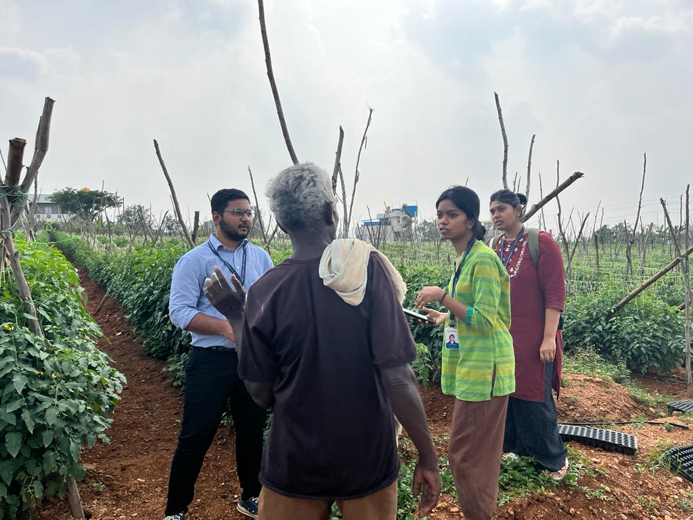

Hi,
I'm Anaswara!
I build AI-driven software and data systems, blending full-stack engineering with machine learning and real-world impact.
Anaswara R.
Washington, DC


Featured
Projects




Work
Experience
June 2025 - Aug 2025
WordPress Developer Intern @ International Association of Fire Fighters
- Translated and updated 500+ multilingual pages (French & Spanish) and fixed layouts for 700+ news pages.
- Researched search keywords (Google Trends) to optimize WEP & GPO site performance.
- Developed the IAFF Fire and EMS Apprenticeship Program webpage.
Nov 2024 - Present
Technical Assistant - II @ The George Washington University
- Deliver technical support to over 25,000 students and staff.
- Resolve network, hardware, and software issues while managing assets and user accounts.
- Monitor IT support tickets using real-time dashboards to improve service delivery.
Jul 2023 - Jul 2024
Configuration Analyst @ Oracle
- Configured Cerner Millennium Tools for Enterprise Scheduling Management (ESM).
- Resolved software bugs to reduce post-go-live issues by 20%.
- Streamlined workflows using MS Excel, Bedrock, and DiscernVisualDeveloper.
- Received 'Seamless Execution Award' for exceptional high-pressure performance.

Research &
Writing


Highlights
Awards & Recognition
-
Winner, Technica National Hackathon 2025 University of Maryland
-
Winner, Startup Pitch Competition Google Developer Club (GWU)
-
SEAS Dean’s Award -50% Merit Scholarship George Washington University
-
Seamless Execution Award Oracle (Customer Service Week 2023)
Leadership & Impact
-
Core Team Member Google Developer Group (GWU)
-
Technical Lead GWU Desis (1,000+ members)
-
President Christites Association (30-member team)
-
Best Student Volunteer Centre for Social Actions (CSA)
Certifications
-
AWS Academy Cloud Foundations Amazon Web Services
-
Oracle Cloud Infrastructure 2025 Certified Foundations Associate
About Me
Building logic that makes an impact.
I am a software engineer who believes that the best code is the kind that solves real problems. Currently finishing my Master’s in Computer Science at The George Washington University (supported by a High Merit Scholarship), I specialize in building scalable AI-driven systems.
My work sits at the intersection of data, design, and deployment. Whether I’m architecting full-stack web applications or fine-tuning machine learning models, I’m obsessed with creating solutions that are efficient, elegant, and effective.
Beyond the screen, I’m a storyteller. You’ll find me vlogging my travels, exploring new cultures, or connecting with people. I believe that being a great engineer means understanding the world you're building for, not just the syntax.
Testimonials
Temba Siwela
Principal Consultant at Oracle, UK
"I've had the pleasure of working with Anaswara at Oracle, and from the moment you meet
her, you're immediately struck by her enthusiasm. She is consistently positive,
cheerful, and a true delight to work with... Anaswara played an integral role in
multiple concurrent projects, and her involvement was key to our team's outstanding
success."
Chris Nyame
Principal Consultant at Oracle Cerner, UK
"Anaswara is a thorough professional with a remarkable eye for detail, ensuring that
every task she undertakes is executed flawlessly. Highly reliable and dependable,
Anaswara consistently delivers outstanding results, often exceeding expectations... I
wholeheartedly recommend Anaswara for any challenging role."
Meghan BouHabib
Deputy Director, Communications at IAFF, USA
"I had the pleasure of working with Anaswara during her three-month internship with us
this summer, and she was an incredible addition to the team. She jumped right in to
support updates and improvements to iaff.org in WordPress, bringing enthusiasm,
reliability, and a genuine eagerness to learn every step of the way."
Contact
Ready to discuss your next big project?
Or just want to say hello? Feel free to drop me a message or connect via social media.